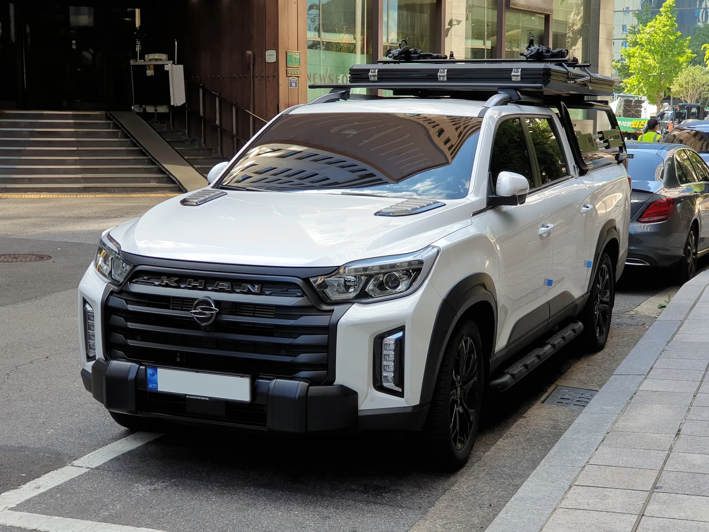
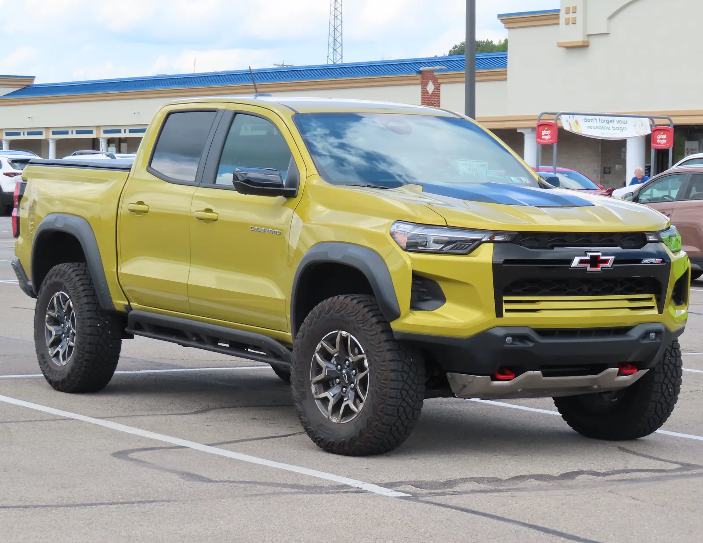
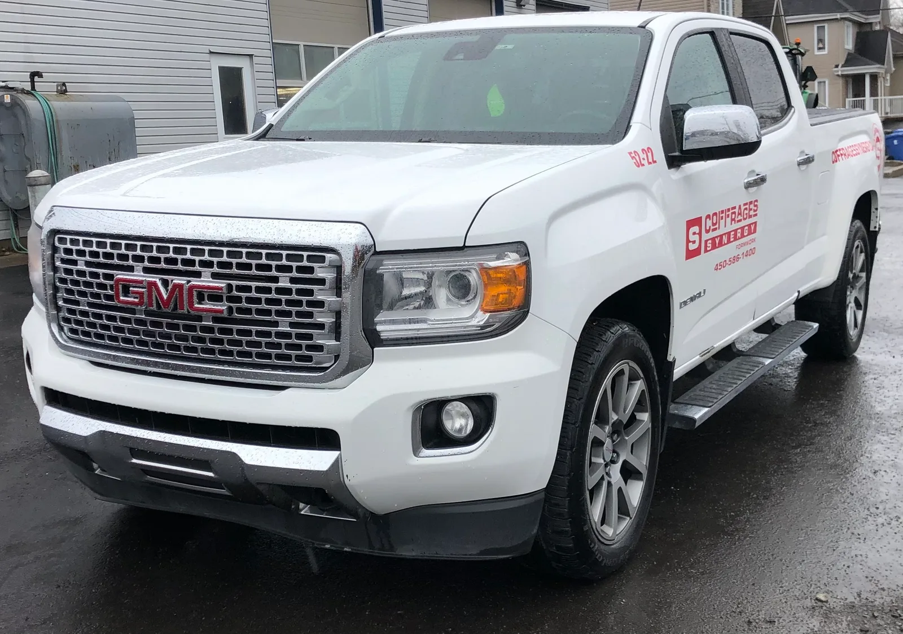

▲ 국내 픽업트럭 시장의 기준점이 된 기아 타스만. 지금 국내에서 새 차로 살 수 있는 '짐 싣는 차'는 픽업트럭과 전기 상용차로 나뉜다 ⓒ Wikimedia Commons
"픽업트럭 사려고 알아봤더니 콜로라도가 목록에서 사라졌다"
2026년 들어 국내 픽업트럭·상용차 시장을 알아본 사람이라면 한 번쯤 맞닥뜨렸을 상황이다. 2019년 국내 출시 이후 7년을 버틴 쉐보레 콜로라도는 2026년 5월 쉐보레코리아 홈페이지에서 조용히 자취를 감췄다. 같은 GM 그룹의 GMC 캐니언과 판매 간섭을 피하기 위한 정리로 알려졌다.
그렇다면 2026년 9월 현재, 국내에서 '짐을 실을 수 있는 차'를 새 차로 사려는 사람은 어떤 선택지를 갖고 있을까. 이 기사는 픽업트럭 3종(타스만·무쏘 Q300·GMC 캐니언)과 전기 상용차 3종(포터2 일렉트릭·봉고3 EV·PV5 카고)을 한 상에 올려, 가격·적재중량·용도를 기준으로 비교했다. 무쏘 Q300은 옛 렉스턴 스포츠·칸의 후속 모델이다. 포터EV·봉고3EV 단독 리뷰는 이미 다룬 적이 있어, 이번엔 픽업트럭까지 포함한 '적재 가능 차량' 전체 지형도에 집중한다.
1. 2026년 국내 '적재 가능 차량' 지형도
국내에서 짐을 싣기 위해 새 차를 산다면 선택지는 크게 두 갈래로 나뉜다. 하나는 오픈 데크에 짐을 얹는 픽업트럭이고, 다른 하나는 밀폐된 적재함(카고·탑차)을 갖춘 1톤급 전기 화물차다. 두 부류 모두 국내 법규상 '화물자동차'로 등록된다는 공통점이 있지만, 파워트레인(내연기관 vs 전기)에 따라 보조금 여부가 갈리고 적재량·용도에서도 뚜렷한 차이가 난다.
📍 콜로라도의 빈자리, GMC 캐니언이 메웠다
쉐보레 콜로라도는 2026년 5월 국내 판매가 종료됐다. 2019년 8월 출시 이후 약 7년간 국내 미드사이즈 픽업 시장의 대표 모델이었지만, 2026년 4월까지 누적 판매는 423대에 그쳤다. 같은 GM 산하 브랜드인 GMC가 2026년 1월 27일 프리미엄 픽업 캐니언(드날리 단일 트림)을 국내에 들여오며 사실상 그 자리를 이어받았다는 게 업계의 대체적인 시각이다.
2. 픽업트럭 삼파전 — 타스만·무쏘 Q300·GMC 캐니언
국내에서 지금 신차로 살 수 있는 픽업트럭은 사실상 3종으로 좁혀진다. 국산 두 종(타스만, 무쏘 Q300)과 수입 한 종(GMC 캐니언)이 현역이고, 콜로라도는 아래 표에서 참고용으로만 남는다. 무쏘 Q300은 옛 렉스턴 스포츠·칸의 후속 모델로, 2025년 3월 '무쏘 스포츠·무쏘 칸'으로 개명된 뒤 2026년 1월 2일 단종되고 사흘 뒤인 1월 5일 완전변경 모델 Q300으로 교체됐다.
| 모델 | 가격대 | 최대 적재중량 | 비고 |
|---|---|---|---|
| 기아 타스만 | 3,500만~5,255만원 | 약 700kg | 2WD·4WD, X-Pro 등 오프로드 트림 보유 |
| KGM 무쏘 Q300 | 2,990만~4,730만원 | 약 400kg | 2026년 1월 출시, 옛 렉스턴 스포츠·칸 후속, 표준·롱데크 구성, 화물차 등록 |
| GMC 캐니언 드날리 | 7,685만원(단일 트림) | 약 630kg | 2.7L 터보 가솔린 314마력, 최고급 단일 트림 |
| 쉐보레 콜로라도(단종) | 최종 7,279만~7,814만원 | 약 400kg | 2026년 5월 국내 판매 종료 |

▲ 렉스턴 스포츠·칸의 마지막 모습. 2025년 3월 '무쏘 스포츠·무쏘 칸'으로 개명된 뒤 2026년 1월 단종돼 후속 모델 무쏘 Q300으로 교체됐다 ⓒ Wikimedia Commons
흥미로운 지점은 가격과 적재중량이 정비례하지 않는다는 점이다. 7,685만원짜리 GMC 캐니언의 적재중량(약 630kg)이 3,500만원부터 시작하는 타스만(약 700kg)보다 오히려 낮다. 미드사이즈 픽업 특성상 편의사양과 승차감에 무게 배분이 쏠리기 때문으로, 짐을 많이 싣는 게 목적이라면 가격표만 보고 고르면 안 된다는 뜻이다. 반대로 가격이 가장 저렴한 무쏘 Q300(2,990만원~)의 적재중량은 약 400kg으로 셋 중 가장 낮아, '싼 값에 많이 싣는' 조합은 이 라인업에선 성립하지 않는다.
3. 전기 상용차 3인방 — 포터2 일렉트릭·봉고3 EV·PV5 카고
픽업트럭이 감당 못 하는 무게는 1톤급 전기 화물차가 받는다. 현대 포터2 일렉트릭과 기아 봉고3 EV는 사실상 같은 플랫폼을 쓰는 형제차이고, 기아 PV5 카고는 이보다 작은 체급의 경형 전기밴이다.
| 모델 | 가격대(세제혜택 전) | 최대 적재중량 | 비고 |
|---|---|---|---|
| 현대 포터2 일렉트릭 | 4,350만~5,524만원 | 최대 1,000kg급 | 탑차·윙바디 등 특장차 옵션 다양 |
| 기아 봉고3 EV | 포터와 유사한 가격대 | 최대 1,000kg급 | 포터2 일렉트릭과 동일 파워트레인 |
| 기아 PV5 카고 | 4,100만~4,520만원 | 600~700kg(트림별 상이) | 경형 전기밴, 캠핑카 개조 베이스로도 인기 |
PV5 카고는 배터리 용량에 따라 스탠다드(700kg)와 롱레인지(600kg)로 최대 적재중량이 갈리며, 기아 정품 액세서리를 장착하면 각각 650kg·550kg 수준으로 줄어든다.
포터2 일렉트릭·봉고3 EV의 자세한 가격표, 보조금 반영 실구매가, 경유 모델 대비 유지비 비교는 별도 기사에서 더 깊게 다룬 바 있다. 포터EV·봉고3EV 실구매가 분석 기사 보기

▲ 기아 PV5 카고. 승객용 PV5 패신저와 달리 뒷좌석 창문이 없는 밀폐형 화물칸을 갖췄으며, 최대 적재중량은 600~700kg 수준으로 1톤 전기트럭보다는 가볍지만 도심 배송에 최적화된 체급이다 ⓒ Wikimedia Commons
4. 콜로라도는 왜 단종됐나 — GMC 캐니언과의 교통정리
콜로라도의 단종은 판매 부진보다 '형제차 정리'에 가깝다. 쉐보레 콜로라도와 GMC 캐니언은 북미에서도 같은 플랫폼(GMT31XX)을 공유하는 사실상 쌍둥이 차종이다. GM코리아가 한국 시장에 캐딜락·GMC 프리미엄 채널을 별도로 운영하기 시작하면서, 대중 브랜드인 쉐보레의 콜로라도 대신 프리미엄 포지션의 GMC 캐니언 하나로 라인업을 통합한 것으로 풀이된다.
✅ 콜로라도 중고차를 고려한다면
· 신차 판매는 종료됐지만 부품 공급·A/S는 쉐보레 서비스망을 통해 유지된다
· 2026년 4월까지 국내 누적 판매가 423대에 그쳐 매물 자체가 희소하다
· 같은 체급을 원한다면 GMC 캐니언(7,685만원)이 사실상의 후속 선택지다
공교롭게도 국산 픽업 시장에서도 비슷한 '조용한 물갈이'가 있었다. KGM 렉스턴 스포츠·칸은 2025년 3월 무쏘 스포츠·무쏘 칸으로 개명됐다가, 2026년 1월 2일 단종되고 사흘 뒤 완전변경 모델 무쏘 Q300으로 교체됐다. 이름은 2년 새 두 번 바뀌었지만 '국산 미드사이즈 픽업'이라는 포지션 자체는 이어지고 있는 셈이다.

▲ 국내에서 판매되던 쉐보레 콜로라도(사진은 북미 사양 ZR2 트림). 국내에는 Z71 단일 트림으로 최종 출시가 7,279만원, 풀옵션 기준 7,814만원이었다 ⓒ Wikimedia Commons

▲ 콜로라도의 빈자리를 채운 GMC 캐니언 드날리. 2.7L 터보 가솔린 314마력에 단일 트림 7,685만원이다 ⓒ Wikimedia Commons
5. 용도별 추천 — 개인용 레저 vs 사업용 화물
어떤 차가 맞는지는 결국 '무엇을 싣느냐'에 달려 있다. 레저·캠핑용으로 가끔 짐을 싣는다면 픽업트럭으로 충분하지만, 매일 반복되는 배송·화물 운송이 목적이라면 1톤 전기트럭 쪽이 압도적으로 유리하다.
| 용도 | 추천 차종 | 이유 |
|---|---|---|
| 레저·캠핑(개인용) | 타스만, 무쏘 Q300 | 오픈 데크에 캠핑 장비 적재, 오프로드 주행 가능 |
| 프리미엄 취향(개인용) | GMC 캐니언 | 고급 인테리어·편의사양, 브랜드 희소성 |
| 도심 배송(사업용) | PV5 카고 | 작은 회전반경, 슬라이딩 도어로 골목 배송에 유리 |
| 중량 화물·용달(사업용) | 포터2 일렉트릭, 봉고3 EV | 1톤급 적재중량, 탑차·냉동탑 등 특장 옵션 풍부 |
📍 픽업트럭도 사실은 '화물차'다 — 그런데 왜 보조금은 못 받을까
의외로 타스만·무쏘 Q300·GMC 캐니언은 모두 국내에서 승용이 아닌 화물자동차로 등록된다. 적재함(데크) 면적이 일정 기준을 넘는 더블캡 픽업은 국토교통부 기준상 화물차로 분류돼, 짧은 번호판(80~97·800~979번대)을 달고 개별소비세 면제 혜택까지 받는다. 다만 이들은 어디까지나 내연기관(가솔린·디젤)이라 전기차 보조금 대상은 아니다. 포터2 일렉트릭·봉고3 EV·PV5 카고 역시 화물차로 등록되는 건 마찬가지지만, 여기에 더해 전기차 국고·지자체 보조금까지 중복으로 받을 수 있다는 점이 실질적인 차이다. 픽업트럭과 전기 상용차를 가르는 기준은 '승용이냐 화물이냐'가 아니라, '내연기관이냐 전기차냐'인 셈이다.
6. 보조금·세제혜택 — 전기 상용차만 누리는 이점
픽업트럭 3종 중 어떤 모델도 정부 보조금을 받지 못한다. 화물차로 등록돼 개별소비세는 면제받지만, 모두 내연기관(가솔린·디젤)이기 때문이다. 반면 포터2 일렉트릭·봉고3 EV·PV5 카고는 전기차 국고 보조금에 더해 지자체 보조금까지 중복 적용된다.
| 구분 | 금액 |
|---|---|
| 차량 출고가(일반형 기준) | 4,350만원 |
| 국고 보조금 | 약 -1,800만원 |
| 지자체 보조금(지역별 상이) | 추가 차감 |
| 실구매가 | 2,000만원 중후반대 |
2026년 국고보조금은 차종별 인증 절차가 끝나는 대로 순차 공개되며, 지자체 보조금 규모와 잔여 물량은 지역마다 다르고 수시로 소진되므로, 계약 전 거주지 기준으로 직접 조회하는 게 필수다. 무공해차 통합누리집 바로가기

▲ 탑차를 얹은 포터2 일렉트릭. 국고·지자체 보조금을 합치면 실구매가가 2천만원대까지 내려간다 ⓒ Wikimedia Commons
7. 요약 — 결국 무엇을 고를 것인가
2026년 9월 현재 국내에서 새 차로 살 수 있는 '적재 가능 차량'은 픽업트럭 3종(타스만·무쏘 Q300·GMC 캐니언)과 전기 상용차 3종(포터2 일렉트릭·봉고3 EV·PV5 카고)으로 정리된다. 콜로라도는 2026년 5월 국내 판매를 마감했고, 그 자리는 GMC 캐니언이 프리미엄 단일 트림으로 이어받았다. 같은 시기 렉스턴 스포츠·칸도 무쏘 개명을 거쳐 완전변경 모델 Q300으로 세대교체됐다.
가격만 보면 GMC 캐니언(7,685만원)이 가장 비싸지만, 적재중량은 오히려 타스만(약 700kg)보다 낮다. 짐을 많이 싣는 게 목적이라면 가격표보다 적재중량 스펙을 먼저 확인해야 한다는 뜻이다.
가장 큰 갈림길은 법적 분류가 아니라 파워트레인이다. 픽업트럭 3종도 실제로는 화물차로 등록돼 개별소비세 면제 등 세제 혜택을 누리지만, 내연기관이라 전기차 보조금 대상에선 빠진다. 반면 포터2 일렉트릭·봉고3 EV·PV5 카고는 화물차 등록에 전기차 보조금까지 중복 적용돼, 레저용은 픽업트럭이, 사업용 화물·배송은 전기 상용차가 사실상 정답에 가깝다.